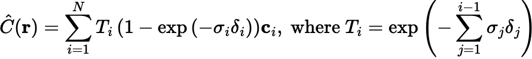

Project 4: Neural Radiance Field
*Although this is written in first-person plural (just preference), the project was completed by myself individually.
Part 0: Calibrating Camera & Capturing a 3D Scan
Part 1: Fit a Neural Field to a 2D Image
For a particular 2D image, we can train a model that, given a pixel coordinate, outputs the corresponding rgb values.
The model architecture consists of the following:
-
A Sinusoidal Positional Encoding operation: expands the dimensionality of the coordinate
from 1x2 to (2L+1)x2, where L represents the frequency level.

- Three repeats of a Linear and ReLU layer. Each layer has width 256.
- One more Linear layer to shrink the width to three neurons, representing red, green, and blue.
- A Sigmoid layer to ensure the output is between 0 and 1 (normalized pixel color range).


With some parameter fine-tuning, we determined that the model's learning rate should be 0.007, and that the number of levels for positional encoding should be 10.
We also experimented with decreasing the levels for positional encoding and the width of the network. We found that with very low PE levels, the image has less high frequencies (e.g. the top images look blurrier than the bottom, as if they had been low-passed). Additionally, with a lower network width, our model also showed less details, indicating that it's harder for the model to learn the image (e.g. you can see more ocean waves in the bottom left picture compared to the bottom right picture).

Besides using MSE as our loss metric, we evaluated our model using PSNR, calculated as 10 * log_10(1 / MSE). We can see that as our iterations increase, our PSNR generally increases (since loss decreases), indicating that our model is consistently improving.

Part 2: Fit a Neural Radiance Field from Multi-view Images
What we did in Part 1 isn't super useful - we basically just trained a model to copy the input image exactly, since it's in 2D. However, we can expand on this idea to perform 3D reconstruction, using a bunch of images to produce a 3D rendering of an object!
Step 1: Getting Rays from Pixels
Given a specific camera position and a pixel value (x, y) within the corresponding image, we want to be able to shoot a ray out of the image and through that pixel, and sample along this ray during training (and testing). To get this ray, we need to find its origin and direction in the world coordinate system.
Before we do this, we must have a way to go from pixel coordinates to world coordinates, which requires knowing the intrinsic matrix of the camera, as well as the extrinsics from all the camera poses.
Getting the intrinsic matrix of the camera requires calibrating the camera: cameras have different intrinsics, so we need to calibrate our camera by taking many pictures of ArUco tags. We can determine the world coordinates of the ArUco tag corners, then use `cv2.aruco.detectMarkers` to detect the ArUco tags in the image, and then calibrate the camera using `cv2.calibrateCamera`.
To get the extrinsic matrix of each camera pose, we can use `cv2.solvePnP` to get the rotation and translation vectors, then process those vectors to retrieve our camera-to-world matrix. `cv2.solvePnP` requires knowing the intrinsics matrix and distortion coefficients (from `cv2.calibrateCamera`, and object points (the world coordinates of the ArUco tags) and image points (detected location of the ArUco tags).
Below are the visualizations of the cloud of cameras from photos I took, where we can see how the camera-to-world matrices map the cameras to their world location:


And a slightly more zoomed in version so we can verify that the cameras are actually displayed in the right place, based on the images shown:

Once we have our intrinsic and extrinsic matrices, we can compute the origin vector and direction of a ray going through a particular camera pose and a pixel. This will be useful for sampling later in Step 3.
Step 2: NeRF MLP Architecture
The model architecture consists of the following:
- Positional Encoding for both inputs.
- Four repeats of a Linear and ReLU layer for the world coordinate input. Each layer has width 256.
- Concatenate the world coordinate input with the previous output, then a Linear layer to shrink the width back to 256.
- Three repeats of a ReLU and Linear layer with width 256.
- To finalize the density, we apply a final Linear layer to shrink the output to width 1.
- For the rgb, we apply a Linear layer (256), concatenate the PE'ed ray direction, then a Linear + ReLU + Linear + Sigmoid to shrink the output to 3 and keep it within 0 and 1.

Step 3: Sampling & Volumetric Rendering
Our NeRF model expects xyz + ray direction inputs, and outputs the density and rgb value at the world coordinate from the ray direction view. To evaluate our NeRF model, we are going to sample through a ray from a particular image, get the density and rgb values using our model, aggregate the results using volume rendering, then compare it with the color of the actual pixel.
Sampling across a ray: Given the origin vector and ray direction of a particular ray, as well as near and far values and number of samples, we compute the world coordinates of many points along the ray, which we feed into our NeRF model. During training, we include perturbations (we don’t sample at uniform distances) to try to learn as much information from our training images as possible.
Below are visual examples of what sampling across a ray looks like. We can see that the points start and end at fixed distances from the camera, and that there are perturbations between the samples.


The volume rendering equation is as follows:

Step 4: Training our Model
Results with Lego Dataset
We first trained our model with the Lego dataset, using a set of 10 images as our validation group. The near and far were 2.0 and 6.0, respectively, and we used a batch size of 10k rays.
Since the images were already pre-processed, we were given the camera extrinsic matrices and camera focal length (to compute the intrinsic matrix). As a sanity check, we visualized the camera poses in viser, and we can see that the cameras indeed form a dome-like shape (see Step 3's images).
Looking at intermediate renders of a chosen validation image, we can see that the quality continues to increase - a good sign!

Similarly, the PSNRs continue to increase, which is a good indication that our model is likely producing better results.

The resulting gif after 12k training steps:

Results with Lafufu Dataset
We tested our implementation with the provided Lafufu dataset, which included calibration images and the Lafufu images. Unlike the Lego dataset, we had to calculate the extrinsics and intrinsic matrices ourselves with the given calibration and Lafufu images. The calculation process is described in Part 2.1.
The resulting gif after 10k training steps, using a learning rate of 0.0005, batch size of 10k rays, near of 0.02, and far of 0.5.

Results with Bunny Dataset
And finally, here's the results for my own images I took of my younger sister's bunny clip! Like the Lafufu dataset, I had to resize these images down for computation sake. I did not make any changes to my model for this dataset - I still used a width of 256, batch size of 10k rays, and learning rate of 0.0005. I did change the near and far parameters to account for the average camera distance from the ArUco tag, resulting in a near of 0.02 and far of 0.45.


However, looking at the intermediate renderings of a chosen validation image, we see that we already get a pretty decent result by just iteration 500 (we can make out the tag and the bunny, as well as the turquoise pillow it is on). The tag and bunny become clearer in iterations 3000+, but there's also an extra pink blob that gets introduced, hm...